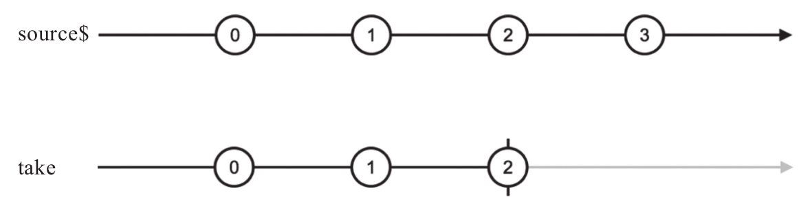
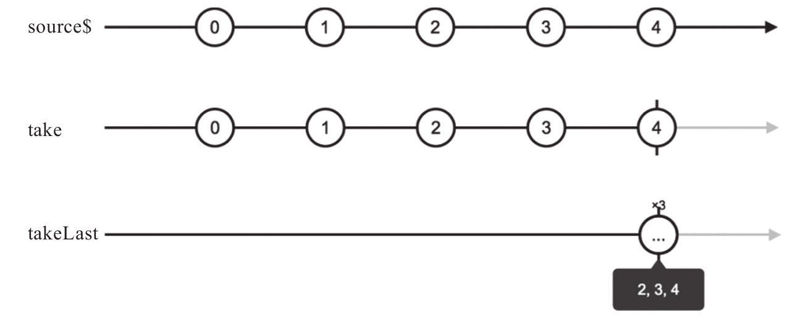
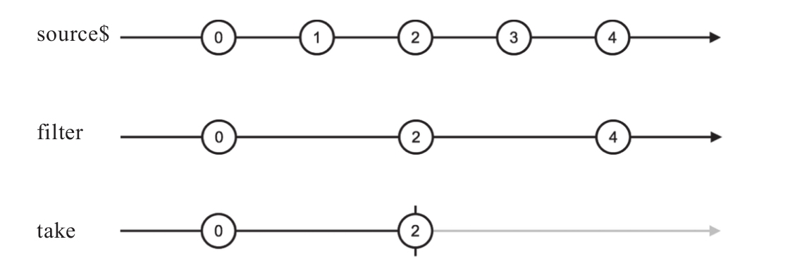
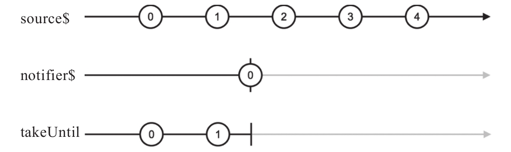

take就是“拿”，从上游Observable拿数据，拿够了就完结，至于怎么算“拿够”，由take的参数来决定，take只支持一个参数count，也就是限定拿上游Observable的数据数量。
下面是一个使用take的例子：
import 'rxjs/add/observable/interval'; import 'rxjs/add/operator/take'; const source$ = Observable.interval(1000); const last$ = source$.take(3);
在上面的代码例子中，上游source$每隔一秒钟吐出一个递增整数，source$每吐出一个数据，last$都会立刻吐出同样的数据，但是，只吐出3次。
虽然source$是一个永不完结的数据流，但是take的参数3限定了它只拿3个，三秒之后，take产生的last$就完成任务，立刻完结，弹珠图如图7-4所示。

图7-4 take的弹珠图
单独一个take的功能平淡无奇，只是从上游拿指定数量的数据，但是take还有很多兄弟，满足各种需求。下面介绍这一族兄弟，包括：
·takeLast
·takeWhile
·takeUntle
1.takeLast
take相当于一个可以获取多个数据的first，那么takeLast相当于一个可以获取多个数据的last。和last一样，takeLast只有在上游数据完结的时候才能决定“最后”的数据是哪些，在吐出这些数据之后立刻完结。
下面是使用takeLast的示例代码：
import 'rxjs/add/observable/of'; import 'rxjs/add/operator/takeLast'; const source$ = Observable.of(3, 1, 4, 1, 5, 9); const last3$ = source$.takeLast(3);
last3$会吐出source$最后吐出的三个数1、5、9，然后完结。
如果上游在一段时间范围内产生的数据，那么就必须要等到上游完结takeLast产生的Observable对象才产生数据，示例代码如下：
const source$ = Observable.interval(1000); const take$ = source$.take(5); const last3$ = take$.takeLast(3);
上面的代码既使用了take，也使用了takeLast，从弹珠图上可以看出两个操作符的差别，如图7-5所示。

图7-5 takeLast的弹珠图
take的作用是获取上游的数据，只要没有超过给定的数量限制，上游产生一个数据，take都会立刻转手给下游。所以，弹珠图上take产生的Observable对象数据产生时刻和source$是一致的；takeLast只有确定上游数据完结的时候才能产生数据，而且是一次性产生所有数据，即takeLast在take产生的Observable对象完结时把2、3、4数据一次性传给下游。
在上面的代码中，如果不使用take，直接让source$成为takeLast的上游，那么takeLast产生的Observable对象永远不会产生数据，也永远不会完结，因为它等不到上游的“最后数据”。
2.takeWhile
take虽然能够获取上游的多个数据，但是不支持判定函数作为参数，只能简单地取上游Observable中排在前面的指定个数数据。takeWhile弥补了这个缺点，takeWhile接受一个判定函数作为参数，这个判定函数有两个参数，分别代表上游的数据和对应的序号，takeWhile会吐出上游数据，直到判定函数返回false，只要遇到第一个判定函数返回false的情况，takeWhile产生的Observable就完结。
下面是一个使用takeWhile的例子：
import 'rxjs/add/observable/range'; import 'rxjs/add/operator/takeWhile'; const source$ = Observable.range(1, 100); const takeWhile$ = source$.takeWhile( value => value % 2 === 0 );
在上面的例子中，takeWhile$一个数据都不吐出就完结，因为上游source$吐出的第一个数据是1，不满足判定条件。
因为takeWhile的判定函数支持第二个序号参数，所以实际上可以利用takeWhile来实现take，代码如下：
Observable.prototype.take = function (count) {
return this.takeWhile((value, index) => index < count);
};
在上面的代码中，takeWhile的参数判定函数支持两个参数，第一个参数value是上游数据的值，第二个参数index是数据对应的编号（从0开始编号），所以只需要对比index和count就可以实现take的功能。
虽然可以用takeWhile实现take的功能，但是take这个操作符并不显得多余，因为take提供了一种简洁的获取上游若干个数据的方法，在本书的示例代码中也大量使用了take。
3.take和filter的组合
如果想要获得上游Observable满足条件的前N个数据，怎么办呢？take只能接受数值参数，takeWhile只能接受判定条件参数，RxJS并没有提供一个类似take的操作符既支持数值参数又支持判定条件参数。为了解决这个问题，就需要用上操作符的组合。
Observable.prototype.takeCountWhile = function (count, predicate) {
return this.filter(predicate).take(count);
}
在上面的代码中，创造了一个新的操作符叫做takeCountWhile，它接受两个参数count和predicate，兼具take和takeWhile的参数功能。
在操作符的函数体部分，先用filter来过滤所有满足判定函数predicate的数据，然后用take只取前count个。
值得一提的是，filter并不是抽干上游Observable才传递数据给take，而是对上游每个数据都在用predicate判定通过之后，立刻传递给take。
下面的代码可以清楚地看到这个特点：
const source$ = Observable.interval(1000); const even$ = source$.takeCountWhile( 2, value => value % 2 === 0 );
在上面的代码运行结果，就是每隔一秒even$吐出0、2，然后就完结了，这个过程的弹珠图如图7-6所示。

图7-6 filter和take组合的弹珠图
source$是一个永不完结的Observable对象，经过filter的过滤之后，依然是一个永不完结的Observable对象，但是take只取满足判定条件的前2个数据，所以在获得数据2之后，take就会向下游传递完结信号。
4.takeUntil
在RxJS中，takeUntil是一个里程碑式的过滤类操作符，因为takeUntil让我们可以用Observable对象来控制另一个Observable对象的数据产生。
takeUntil的神奇特点就是其参数是另一个Observable对象notifier，由这个notifier来控制什么时候结束从上游Observable拿数据，因为notifier本身又是一个Observable，吐出数据可以非常灵活，这就意味着可以利用非常灵活的规则用takeUntil产生下游Observable。
在介绍创建类操作符时，repeatWhen就利用了类似的notifier参数，现在同样的模式应用到了过滤类操作符中。
使用takeUntil，上游的数据直接转手给下游，直到（Until）参数notifier吐出一个数据或者完结，这个notifier就像一个水龙头开关，控制着takeUntil产生的Observable对象，一开始这个水龙头开关是打开状态，上游的数据像水一样直接流到下游，但是notifier只要一有动静，水龙头开关立刻关闭，上游通往下游的通道也就关闭了。
因为Observable对象吐出数据或者完结可以是异步的，所以利用takeUntil可以灵活操控上下游通道的关闭时机，如下面的代码所示：
import 'rxjs/add/observable/interval'; import 'rxjs/add/observable/timer'; import 'rxjs/add/operator/takeUntil'; const source$ = Observable.interval(1000); const notifier$ = Observable.timer(2500); const takeUntil$ = source$.takeUntil(notifier$);
这个例子中，source$是利用interval产生的Observable，每隔一秒钟吐出一个递增整数，不过interval没有提供任何参数来控制什么时候这个Observable对象完结，所以interval产生的Observable会永远不停地向下游推送数据。
但是，假如我们有这样的需求：每隔一秒钟输出一个递增整数，三秒钟之后结束。面对这种需求，单独一个interval是搞不定的，因为无法控制interval产生的Observable对象在未来完结，这就需要组合操作符，就用得上takeUntil了。
在上面的代码中，notifier$的作用就是在未来给source$一个“通知”，切断水龙头的开关，所以使用timer这个操作符，在2.5秒之后动手。选择2.5秒而不是3秒是故意错开时间。
最后实际运行的结果为，下游Observable对象takeUntil$会每隔一秒钟吐出一个递增整数，在2.5秒之后完结。整个过程的弹珠图如图7-7所示。
注意，作为takeUntil的notifier参数如果在吐出数据或者完结之前抛出了错误，那takeUntil也会把这个错误抛给下游，从而关闭了上下游之间的通道，下面是示例代码：
const source$ = Observable.interval(1000);
const notifier$ = Observable.throw('custom error');
const takeUntil$ = source$.takeUntil(notifier$);
在上面的代码中，takeUntil$会向下游传递notifier$产生的那个错误。

图7-7 takeUntil的弹珠图